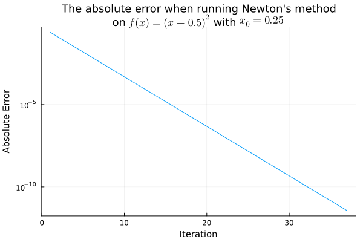
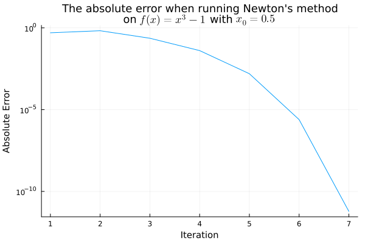
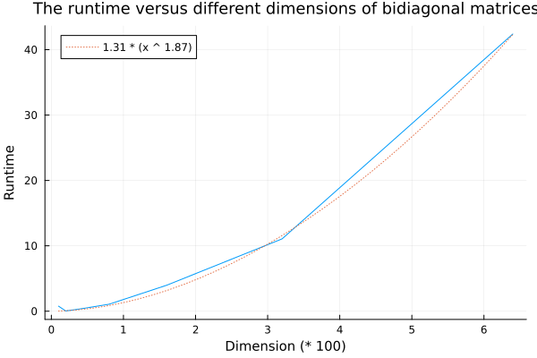
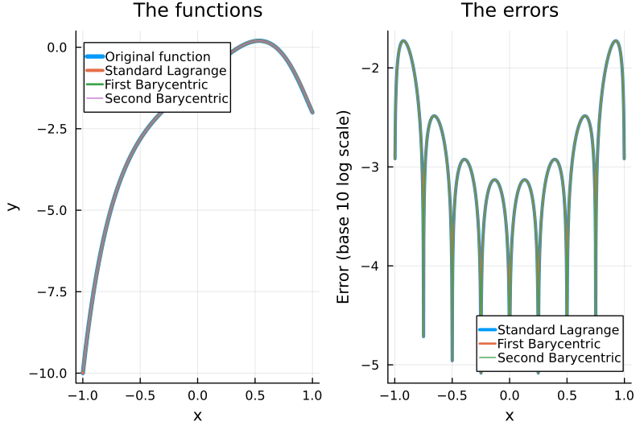
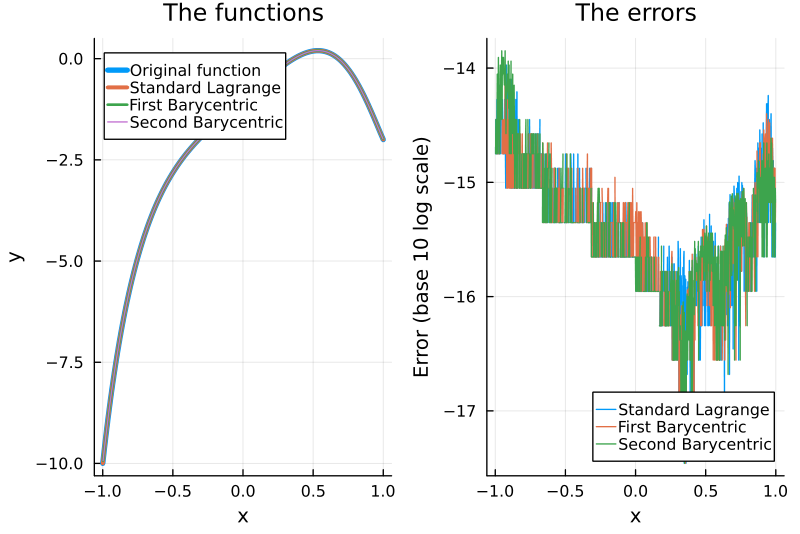
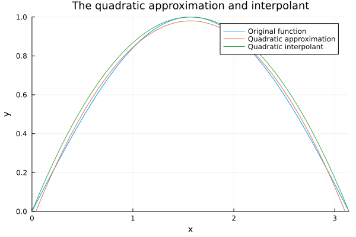
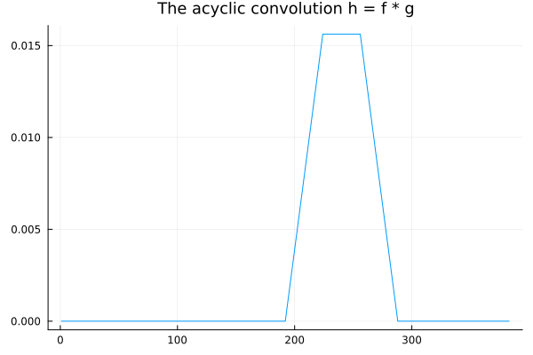

Education / MATH-UA.0396 HW
MATH-UA.0396 Honors Numerical Analysis | Homework Collection
This is the collection of the homework assignments of Honors Numerical Analysis and my solutions. Disclaimer: Note that the solutions are not guaranteed to be correct.
Julia is the programming language used in the coding part. The packages that have been used include Printf, LinearAlgebra, Plots, LsqFit, FFTW, QuadGK, and LaTeXStrings.
Homework 1
Problem 1.1 - Floating Point
function machep(dtype)
"""Print out the machine precision of the specified data type."""
for i = 1 : 100
macheps = 2.0 ^ (-i)
if (dtype(1.0) == dtype(1.0 + macheps))
@printf("Machine precision for %s is %e\n", string(dtype), 2.0 ^ (-i + 1))
break
end
end
endFloat16, Float32, and Float64, respectively.
machep(Float16)
machep(Float32)
machep(Float64)Machine precision for Float16 is 9.765625e-04
Machine precision for Float32 is 1.192093e-07
Machine precision for Float64 is 2.220446e-16Problem 1.2 - IEEE Rounding
Problem 1.3 - Multiple Root Finding
function bisection(func, left, right, tolerance)
"""Bisection method.
Parameters
----------
func : function
The function to find a root for.
left : Float64, etc.
The left boundary of the interval to find a root.
right : Float64, etc.
The right boundary of the interval to find a root.
tolerance : Float64, etc.
The tolerance for the value of the root.
Returns
-------
root : Float64 or boolean
If a root is successfully found within tolerance, then it will be returned.
Otherwise, the function returns false.
"""
mid = (left + right) / 2
mid_val = func(mid)
if (abs(mid_val) < tolerance)
return mid
elseif (right - left < 1e-20)
return false
elseif (mid_val * func(left) < 0)
return bisection(func, left, mid, tolerance)
else
return bisection(func, mid, right, tolerance)
end
endf(x) = x ^ 5 - 3 * x ^ 2 + 1
# Find roots in each range
for i = 0 : 15
left, right = 0.25 * i - 2, 0.25 * i - 1.75
result = bisection(f, left, right, 0.1)
if (typeof(result) == Float64)
@printf("Root found in range [%.2f, %.2f]: f(%f) = %e\n", left, right, result, f(result))
end
endRoot found in range [-0.75, -0.50]: f(-0.562500) = -5.532265e-03
Root found in range [0.50, 0.75]: f(0.625000) = -7.650757e-02
Root found in range [1.25, 1.50]: f(1.343750) = -3.579918e-02function newton(f, f_, x0, tolerance, maxiter)
"""Newton's method.
Parameters
----------
f : function
The function to find a root for.
f_ : function
The derivative of the function to find a root for.
x0 : Float64, etc.
The initial guess of the root, better near the real root.
tolerance : Float64, etc.
The tolerance for the value of the root.
maxiter : Int64, etc.
The maximum number of iterations to run Newton's method.
Returns
-------
root : Float64
The root found by Newton's method.
"""
cur_x, cur_f = x0, f(x0)
for _ = 1 : maxiter
next_x = cur_x - cur_f / f_(cur_x)
if (abs(next_x - cur_x) < tolerance)
break
end
cur_x, cur_f = next_x, f(next_x)
end
return cur_x
endf(x) = x ^ 5 - 3 * x ^ 2 + 1
f_(x) = 5 * x ^ 4 - 6 * x
# Find roots in range via bisection and refine each root via Newton
for i = 0 : 15
left, right = 0.25 * i - 2, 0.25 * i - 1.75
result = bisection(f, left, right, 0.1)
if (typeof(result) == Float64)
refined_result = newton(f, f_, result, 1e-12, 1000)
@printf("Root %f found by Bisection refined to f(%f) = %e\n", result, refined_result, f(refined_result))
end
endRoot -0.562500 found by Bisection refined to f(-0.561070) = -2.220446e-16
Root 0.625000 found by Bisection refined to f(0.599241) = 0.000000e+00
Root 1.343750 found by Bisection refined to f(1.348047) = 2.664535e-15Problem 1.4 - Newton Failures
function newton_hist(f, f_, x0, tolerance, maxiter)
"""Newton's method with iteration history.
Parameters
----------
f : function
The function to find a root for.
f_ : function
The derivative of the function to find a root for.
x0 : Float64, etc.
The initial guess of the root, better near the real root.
tolerance : Float64, etc.
The tolerance for the value of the root.
maxiter : Int64, etc.
The maximum number of iterations to run Newton's method.
Returns
-------
x_hist : 1D array
The history of the x values during the Newton's method.
f_list : 1D array
The history of the f(x) values during the Newton's method.
"""
x_hist, f_hist = [], []
cur_x, cur_f = x0, f(x0)
for _ = 1 : maxiter
next_x = cur_x - cur_f / f_(cur_x)
if (abs(next_x - cur_x) < tolerance)
break
end
push!(x_hist, cur_x)
push!(f_hist, cur_f)
cur_x, cur_f = next_x, f(next_x)
end
return x_hist, f_hist
end;f(x) = (x - 0.5) ^ 2
f_(x) = 2 * x - 1
# Print out the estimated roots and their corresponding values
x_hist, f_hist = newton_hist(f, f_, 0.25, 1e-12, 1000)
err_hist = []
for i in eachindex(x_hist)
push!(err_hist, abs(x_hist[i] - 0.5))
if i % 5 == 0
@printf("Iteration %d: f(%.3f) = %e\n", i, x_hist[i], f_hist[i])
end
endIteration 5: f(0.484) = 2.441406e-04
Iteration 10: f(0.500) = 2.384186e-07
Iteration 15: f(0.500) = 2.328306e-10
Iteration 20: f(0.500) = 2.273737e-13
Iteration 25: f(0.500) = 2.220446e-16
Iteration 30: f(0.500) = 2.168404e-19
Iteration 35: f(0.500) = 2.117582e-22# Plot the absolute errors during the Newton iterations
plt = plot(err_hist, label="", yaxis=:log, xguidefontsize=10, yguidefontsize=10, titlefontsize=12)
title!(string("The absolute error when running Newton's method\non ", L"f(x)=(x-0.5)^2", " with ", L"x_0=0.25"))
xlabel!("Iteration")
ylabel!("Absolute Error")
f(x) = x ^ 3 - 1
f_(x) = 3 * x ^ 2
# Print out the estimated roots and their corresponding values
x_hist, f_hist = newton_hist(f, f_, 0.5, 1e-12, 1000)
err_hist = []
for i in eachindex(x_hist)
push!(err_hist, abs(x_hist[i] - 1.0))
@printf("Iteration %d: f(%.3f) = %e\n", i, x_hist[i], f_hist[i])
endIteration 1: f(0.500) = -8.750000e-01
Iteration 2: f(1.667) = 3.629630e+00
Iteration 3: f(1.231) = 8.659146e-01
Iteration 4: f(1.041) = 1.270414e-01
Iteration 5: f(1.002) = 4.713635e-03
Iteration 6: f(1.000) = 7.367531e-06
Iteration 7: f(1.000) = 1.809353e-11plt = plot(err_hist, label="", yaxis=:log, xguidefontsize=10, yguidefontsize=10, titlefontsize=12)
title!(string("The absolute error when running Newton's method\non ", L"f(x)=(x-0.5)^2", " with ", L"x_0=0.25"))
xlabel!("Iteration")
ylabel!("Absolute Error")
Problem 1.5 - Secant Convergence
Problem 1.6 - Vector and Matrix Norm Inequalities
Problem 1.7 - Frobenius Matrix Norm
Homework 2
Problem 2.1 - Quasi-Newton Optimization
Problem 2.2 - Flop Counts
Problem 2.3 - LU Cost
for $j=1$ to $n-1$ do
for $i=j+1$ to $n$ do
$l_{ij}\gets u_{ij}/u_{jj}$; $\texttt{// 1 division}$
for $k=j$ to $n$ do
$u_{ik}\gets u_{ik}-l_{ij}u_{jk}$; $\texttt{// 1 multiplication and 1 subtraction}$
Problem 2.4 - More LU
Problem 2.5 - Gram-Schmidt Stability
Q = classical_gs(n, A)n = 10
A = rand(n, n)
Q = classical_gs(n, A)
err = norm(Q' * Q - I)err is a measure of how orthonormal the columns of $Q$ are.
function classical_gs(n, A)
"""Classical Gram-Schmidt orthogonalization algorithm.
Parameters
----------
n : Int64, etc.
The dimension of the matrix to be orthogonalized.
A : Matrix{Float64}, etc.
The matrix to be orthogonalized.
Returns
-------
Q : Matrix{Float64}
The orthogonalized matrix via the classical Gram-Schmidt algorithm.
"""
Q = Array{Float64}(undef, n, n)
for j = 1 : n
v = copy(A[:, j])
for i = 1 : (j - 1)
v .-= dot(Q[:, i], A[:, j]) * Q[:, i]
end
Q[:, j] = v / norm(v)
end
return Q
endn = 10
A = rand(n, n)
Q = classical_gs(n, A)
err = norm(Q' * Q - I)
@printf("Error: %.4f\n", err)Error: 0.0000Q = modified_gs(n, A)function modified_gs(n, A)
"""Modified Gram-Schmidt orthogonalization algorithm.
Parameters
----------
n : Int64, etc.
The dimension of the matrix to be orthogonalized.
A : Matrix{Float64}, etc.
The matrix to be orthogonalized.
Returns
-------
Q : Matrix{Float64}
The orthogonalized matrix via the modified Gram-Schmidt algorithm.
"""
Q = Array{Float64}(undef, n, n)
V = copy(A)
for i = 1 : n
Q[:, i] = V[:, i] / norm(V[:, i])
for j = (i + 1) : n
V[:, j] .-= dot(Q[:, i], V[:, j]) * Q[:, i]
end
end
return Q
endn = 10
A = rand(n, n)
Q = modified_gs(n, A)
err = norm(Q' * Q - I)
@printf("Error: %.4f\n", err)Error: 0.0000H = hilbert(n)function hilbert(n)
"""Generates a Hilbert matrix, with H_ij = (i+j-1) ^(-1).
Parameters
----------
n : Int64, etc.
The dimension of the Hilbert matrix to generate.
Returns
-------
H : Matrix{Float64}
The Hilbert matrix of the specified dimension.
"""
H = Array{Float64}(undef, n, n)
for i = 1 : n
for j = 1 : n
H[i, j] = 1 / (i + j - 1)
end
end
return H
endfor n = [25, 50, 100, 200, 400]
H = hilbert(n)
Q1 = classical_gs(n, H)
Q2 = modified_gs(n, H)
err1 = norm(Q1' * Q1 - I)
err2 = norm(Q2' * Q2 - I)
@printf("n=%d, Classical-GS error: %.4f, Modified-GS error: %.4f\n", n, err1, err2)
endn=25, Classical-GS error: 18.4755, Modified-GS error: 2.7030
n=50, Classical-GS error: 42.6547, Modified-GS error: 3.0941
n=100, Classical-GS error: 92.5390, Modified-GS error: 3.7117
n=200, Classical-GS error: 192.4722, Modified-GS error: 4.3593
n=400, Classical-GS error: 392.4678, Modified-GS error: 4.8997Homework 3
Problem 3.1 - Inverse Power Method
repeat
$k\gets k+1$;
solve $(A-3I)\mathbf{y}_k=\mathbf{w}_{k-1}$, which is equivalent to $\mathbf{y}_k=(A-3I)^{-1}\mathbf{w}_{k-1}$;
$\mathbf{w}_k\gets\mathbf{y}_k/\norm{\mathbf{y}_k}$;
until terminating condition is met;
function inverse_power_with_shift(n, A, s)
"""The inverse power method with shift.
Parameters
----------
n : Int64, etc.
The dimenstion of the matrix for which some eigenvalue will be computed.
A : Matrix{Float64}, etc.
The matrix for which some eigenvalue will be computed.
s : Float64, etc.
The amount of shift. s should be taken near the target eigenvalue.
Returns
-------
eigval : Float64, etc.
The eigenvalue of A that is closest to the shift s.
eigvec : Vector{Float64}, etc.
The eigenvector corresponding to the eigenvalue found.
"""
sA, w, y = A - s * I, rand(n), zeros(n)
eigval_prev, eigval = 1, 10
while abs((eigval - eigval_prev) / eigval_prev) > 1e-12
@printf("Absolute error: %.5e\n", abs(eigval - eigval_prev))
eigval_prev = eigval
y = w / norm(w)
w = sA \ y
eigval = 1 / dot(y, w) + s
end
return eigval, w
endA = [1 0 0.5; 0 3 0.25; 0.5 0.25 6]
n, s = 3, 3
eigval, eigvec = inverse_power_with_shift(n, A, s)
@printf("\n")
@printf("Results\n")
@printf("-------\n")
@printf("Eigenvalue approx. %.5f\n", eigval)
@printf("Eigenvector approx. [")
map(x -> @printf(" %.5f", x), eigvec)
@printf(" ]\n\n")
@printf("Validation\n")
@printf("----------\n")
@printf("Av = [")
map(x -> @printf(" %.5f", x), A * eigvec)
@printf(" ]\n")
@printf("lv = [")
map(x -> @printf(" %.5f", x), eigval * eigvec)
@printf(" ]\n")Absolute error: 9.00000e+00
Absolute error: 7.05502e+00
Absolute error: 3.51488e-02
Absolute error: 1.82714e-06
Absolute error: 1.10647e-10
Results
-------
Eigenvalue approx. 2.98013
Eigenvector approx. [ 1.00666 -50.16970 3.98663 ]
Validation
----------
Av = [ 2.99997 -149.51246 11.88070 ]
lv = [ 2.99997 -149.51246 11.88070 ]Problem 3.2 - Companion Matrices
eigen function can do this computation.
pwcoefs(n) which returns the coefficients $a_i$ of the Wilkinson's polynomial as an array. Submit these coefficients, clearly labelled, and showing all significant digits.
Then, use these coefficients to populate the associated companion matrix $A_p$. Use $A_p$ to separately compute the roots of $p_w$, and compute their relative error. Can you explain the results?
function pwcoefs(n)
"""Returns the coefficients of Wilkinson's polynomial.
Parameters
----------
n : Int64, etc.
The order of the Wilkinson's polynomial, i.e., the polynomial
(x - 1)(x - 2)(x - 3) ... (x - n)
Returns
-------
coeffs : Array{Float64}, etc.
The array of coefficients, starting from the constant term.
"""
coeffs = zeros(n + 1)
coeffs[1] = 1
for i in 1 : n
for j in (i + 1) : -1 : 2
coeffs[j] = coeffs[j - 1] - i * coeffs[j]
end
coeffs[1] = -i * coeffs[1]
end
return coeffs
endn = 15
coeffs = pwcoefs(n)
# Printing the polynomial
@printf("Wilkinson's polynomial of order %d\n", n)
@printf("----------------------------------\n")
for (i, coeff) in enumerate(coeffs)
if i == 1
@printf("%d", coeff)
elseif i == 2
if coeff < 0
if coeff == -1
@printf(" - x")
else
@printf(" - %d x", -coeff)
end
elseif coeff > 0
if coeff == 1
@printf(" + x")
else
@printf(" + %d x", coeff)
end
end
else
if coeff < 0
if coeff == -1
@printf(" - x^%d", i - 1)
else
@printf(" - %d x^%d", -coeff, i - 1)
end
elseif coeff > 0
if coeff == 1
@printf(" + x^%d", i - 1)
else
@printf(" + %d x^%d", coeff, i - 1)
end
end
end
end
@printf("\n\n")
# Finding eigenvalues, i.e., roots
l, _ = eigen(Ap)
@printf("The eigenvalues, i.e., computed roots\n")
@printf("-------------------------------------\n")
for (i, eigval) in enumerate(l)
@printf("Eigenvalue: %.10f \t Relative error = %.5e\n", eigval, abs(eigval - i) / i)
endWilkinson's polynomial of order 15
----------------------------------
-1307674368000 + 4339163001600 x - 6165817614720 x^2 + 5056995703824 x^3
- 2706813345600 x^4 + 1009672107080 x^5 - 272803210680 x^6
+ 54631129553 x^7 - 8207628000 x^8 + 928095740 x^9
- 78558480 x^10 + 4899622 x^11 - 218400 x^12
+ 6580 x^13 - 120 x^14 + x^15
The eigenvalues, i.e., computed roots
-------------------------------------
Eigenvalue: 1.0000000000 Relative error = 2.78444e-13
Eigenvalue: 2.0000000000 Relative error = 1.38967e-11
Eigenvalue: 2.9999999994 Relative error = 1.97443e-10
Eigenvalue: 4.0000000057 Relative error = 1.41314e-09
Eigenvalue: 4.9999999663 Relative error = 6.73660e-09
Eigenvalue: 6.0000001620 Relative error = 2.69928e-08
Eigenvalue: 6.9999993188 Relative error = 9.73189e-08
Eigenvalue: 8.0000022444 Relative error = 2.80553e-07
Eigenvalue: 8.9999948078 Relative error = 5.76907e-07
Eigenvalue: 10.0000079743 Relative error = 7.97429e-07
Eigenvalue: 10.9999922537 Relative error = 7.04207e-07
Eigenvalue: 12.0000043031 Relative error = 3.58593e-07
Eigenvalue: 12.9999990613 Relative error = 7.22108e-08
Eigenvalue: 13.9999997975 Relative error = 1.44646e-08
Eigenvalue: 15.0000001057 Relative error = 7.04763e-09Problem 3.3 - Matrix Functions
function mat_sqrt(A)
"""Find the square root of a symmetric positive definite matrix.
Parameters
----------
A : Matrix{Float64}, etc.
The matrix to find the square root of.
Returns
-------
sqA : Matrix{Float64}
The square root of the given matrix.
"""
X = copy(A)
for _ = 1 : 1000
X_new = (inv(X) * A + X) / 2
if norm(X_new - X) < 1e-12
break
end
X = X_new
end
return X
end# Constructing the matrix
n = 6
A = Matrix{Float64}(5I, n, n)
for i = 1 : n
for j = 1 : n
A[i, j] += sqrt(i ^ 2 + j ^ 2)
end
end
# Eigendecomposition of A
l, U = eigen(A)
D = Diagonal(l)
# Find the square root of A
sqA = mat_sqrt(A)
@printf("sqrt(A) found via Newton's iteration\n")
@printf("------------------------------------\n")
display(sqA)
@printf("\n")
# Result validation
@printf("Result validation\n")
@printf("-----------------\n")
@printf("| sqrt(A)' * sqrt(A) - A | = %.5e\n", norm(sqA' * sqA - A))sqrt(A) found via Newton's iteration
------------------------------------
6*6 Matrix{Float64}:
2.1871 0.12786 0.318478 0.508397 0.695035 0.878351
0.12786 2.47818 0.386222 0.541298 0.699949 0.859427
0.318478 0.386222 2.71939 0.597323 0.720606 0.84905
0.508397 0.541298 0.597323 2.90706 0.756943 0.851258
0.695035 0.699949 0.720606 0.756943 3.04239 0.865851
0.878351 0.859427 0.84905 0.851258 0.865851 3.12729
Result validation
-----------------
| sqrt(A)' * sqrt(A) - A | = 9.25156e-15Problem 3.4 - Jacobi's Method
function _generate_Rpq(n, p, q, phi)
"""Generate R_pq for the Jacobi method."""
R, c, s = Array{Float64}(I, n, n), cos(phi), sin(phi)
R[p, p] = c
R[q, q] = c
R[p, q] = s
R[q, p] = -s
return R
end
function jacobi_eigen(n, A)
"""The Jacobi method for eigenproblem.
Parameters
----------
n : Int64, etc.
The dimension of the matrix to be found eigenvalues and eigenvectors of.
A : Matrix{Float64}, etc.
The matrix to be found eigenvalues of.
Returns
-------
eigvals : Array{Float64}
The array of eigenvalues of the given matrix.
eigvecs : Matrix{Float64}
The matrix where each column is an eigenvector of the given matrix.
Notes
-----
Note that the eigenvalues and the eigenvectors given in `eigvals` and `eigvecs`
respectively are in the same order.
"""
D, eigvecs, p, q, target = copy(A), Matrix{Float64}(I, n, n), 0, 0, -1
for i = 1 : n
for j = 1 : n
if i != j && abs(D[i, j]) > target
p, q, target = i, j, abs(D[i, j])
end
end
end
for _ = 1 : 1000
phi = atan(2 * D[p, q] / (D[q, q] - D[p, p])) / 2
R = _generate_Rpq(n, p, q, phi)
D = R' * D * R
eigvecs *= R
target, sum_of_squares = -1, 0
for i = 1 : n
for j = 1 : n
if i != j
sum_of_squares += D[i, j] ^ 2
if abs(D[i, j]) > target
p, q, target = i, j, abs(D[i, j])
end
end
end
end
if sqrt(sum_of_squares) <= 1e-8
break
end
end
return diag(D), eigvecs
endfunction generate(n)
A = Array{Float64}(undef, n, n)
for i = 1 : n
for j = 1 : n
A[i, j] = sqrt(i ^ 2 + j ^ 2)
end
end
return A
end
for n = [10, 20, 40]
# Generate the target matrix
@printf("Case n = %d\n", n)
@printf("-----------\n")
A = generate(n)
# Run the Jacobi method
eigvals, eigvecs = jacobi_eigen(n, A)
@printf("Validate: | UDU^-1 - A | = %.5e\n", norm(eigvecs * diagm(eigvals) * inv(eigvecs) - A))
# Output the 5 largest eigenvalues
idx = sortperm(abs.(eigvals))
largest = eigvals[idx[end - 4 : end]]
@printf("Showing the 5 largest eigenvalues:\n")
for i = 1 : 5
@printf(" [%d] %.5f\n", i, largest[6 - i])
end
@printf("\n")
endCase n = 10
-----------
Validate: | UDU^-1 - A | = 6.05089e-09
Showing the 5 largest eigenvalues:
[1] 87.28988
[2] -8.95725
[3] -0.49118
[4] -0.05302
[5] -0.00605
Case n = 20
-----------
Validate: | UDU^-1 - A | = 9.64148e-09
Showing the 5 largest eigenvalues:
[1] 336.77585
[2] -37.10268
[3] -2.30460
[4] -0.31706
[5] -0.05487
Case n = 40
-----------
Validate: | UDU^-1 - A | = 1.68860e-05
Showing the 5 largest eigenvalues:
[1] 1322.25552
[2] -150.79814
[3] -9.89504
[4] -1.50351
[5] -0.30898Homework 4
Problem 4.1 - Bidiagonal QR
function qr_svd(n, A)
"""The QR algorithm.
Parameters
----------
n : Int64, etc.
The dimension of the matrix to find singular values of.
A : Matrix{Float64}, etc.
The matrix to find singular values of.
Returns
-------
singvals : Array{Float64}
The array of singular values of the given matrix.
"""
B = A' * A
prev = 1
for _ = 1 : 1000
(Q, R) = qr(B)
B = R * Q
sum_of_squares = 0
for i = 2 : n
for j = 1 : (i - 1)
sum_of_squares += B[i, j] ^ 2
end
end
if abs((sqrt(sum_of_squares) - prev) / prev) <= 1e-6
break
end
prev = sum_of_squares
end
return sqrt.(diag(B))
endfunction construct_bidiag(n)
"""Contruct a bidiagonal matrix.
Parameters
----------
n : Int64, etc.
The dimension of the bidiagonal matrix to construct.
Returns
-------
A : Matrix{Float64}, etc.
The construct bidiagonal matrix of the given dimension.
The diagonal entries A_ii are given by sqrt(i), and
the super-diagonal entries A_i(i+1) are given by (1+i)^0.03.
"""
A = zeros(n, n)
for i = 1 : (n - 1)
A[i, i] = sqrt(i)
A[i, i + 1] = (1 + i) ^ 0.03
end
A[n, n] = sqrt(n)
return A
end
# Contruct the bidiagonal matrix A
n = 25
A = construct_bidiag(n)
# Perform the QR algorithm and compare with built-in SVD
singvals = sort(qr_svd(n, A), rev=true)
ref_singvals = sort(svd(A).S, rev=true)
@printf("Singular values of A (largest ten)\n")
@printf("----------------------------------\n")
@printf(" \t QR \tJulia SVD\n")
@printf("----\t---------\t---------\n")
for i = 1 : 10
@printf("[%d]\t%.7f\t%.7f\n", i, singvals[i], ref_singvals[i])
endSingular values of A (largest ten)
----------------------------------
QR Julia SVD
---- --------- ---------
[1] 5.8046518 5.8046518
[2] 5.5090336 5.5090336
[3] 5.2643190 5.2643190
[4] 5.0463878 5.0463878
[5] 4.8462526 4.8462526
[6] 4.6595135 4.6595135
[7] 4.4837920 4.4837920
[8] 4.3178160 4.3178160
[9] 4.1609606 4.1609606
[10] 4.0127275 4.0127275# Time on different sizes of A
runtime, ns = [], [10, 20, 40, 80, 160, 320, 640]
for n = ns
A = construct_bidiag(n)
t = @elapsed qr_svd(n, A)
push!(runtime, t)
end
# Draw the plot
plt = plot(ns / 100, runtime, label="", xguidefontsize=10, yguidefontsize=10, titlefontsize=12)
title!("The runtime versus different dimensions of bidiagonal matrices")
xlabel!("Dimension (* 100)")
ylabel!("Runtime")
# Nonlinear fitting
model(x, params) = (x .^ params[2]) .* params[1]
params_init = [1.0, 2.0]
params_fit = curve_fit(model, ns / 100, runtime, params_init).param
xs = LinRange(ns[1] / 100, ns[end] / 100, 30)
plot!(xs, model(xs, params_fit), label=@sprintf("%.2f * (x ^ %.2f)", params_fit[1], params_fit[2]), linestyle=:dot)
savefig(plt, "images/Q1-plot.png")
Problem 4.2 - Lagrange Interpolant
function lagrange(f, n, x)
"""The standard Lagrange form of polynomial interpolant.
Parameters
----------
f : Function of the form lambda x: f(x)
The function to interpolate.
n : Int64, etc.
The degree of the polynomial interpolant.
x : Float64, etc.
The point to evaluate the polynomial interpolant at.
Returns
-------
p : Float64
The value of the polynomial interpolant at the given point.
"""
p, xs = 0, [i / n - 1 for i in 0 : (2 * n)]
for k = 0 : (2 * n)
Lk = 1
for i = 0 : (2 * n)
if i == k
continue
else
Lk *= (x - xs[i + 1]) / (xs[k + 1] - xs[i + 1])
end
end
p += Lk * f(xs[k + 1])
end
return p
endfunction barycentric1(f, n, x)
"""The first Barycentric form of polynomial interpolant.
Parameters
----------
f : Function of the form lambda x: f(x)
The function to interpolate.
n : Int64, etc.
The degree of the polynomial interpolant.
x : Float64, etc.
The point to evaluate the polynomial interpolant at.
Returns
-------
p : Float64
The value of the polynomial interpolant at the given point.
"""
xs = [i / n - 1 for i in 0 : (2 * n)]
phi = prod([x - xs[j + 1] for j = 0 : (2 * n)])
p = 0
for k = 0 : (2 * n)
wk = 1
for i = 0 : (2 * n)
if i == k
continue
else
wk /= (xs[k + 1] - xs[i + 1])
end
end
p += phi * f(xs[k + 1]) / (x - xs[k + 1]) * wk
end
return p
endfunction barycentric2(f, n, x)
"""The second Barycentric form of polynomial interpolant.
Parameters
----------
f : Function of the form lambda x: f(x)
The function to interpolate.
n : Int64, etc.
The degree of the polynomial interpolant.
x : Float64, etc.
The point to evaluate the polynomial interpolant at.
Returns
-------
p : Float64
The value of the polynomial interpolant at the given point.
"""
xs = [i / n - 1 for i in 0 : (2 * n)]
numerator, denominator = 0, 0
for k = 0 : (2 * n)
wk = 1
for i = 0 : (2 * n)
if i == k
continue
else
wk /= (xs[k + 1] - xs[i + 1])
end
end
numerator += f(xs[k + 1]) * wk / (x - xs[k + 1])
denominator += wk / (x - xs[k + 1])
end
return numerator / denominator
end# Construct the function and compute the interpolants
n = 4
f(x) = x ^ 9 - 5 * x ^ 4 + 3 * x - 1
lagrange_(x) = lagrange(f, n, x)
barycentric1_(x) = barycentric1(f, n, x)
barycentric2_(x) = barycentric2(f, n, x)
# Compute the values of the original function and three interpolants
xs = LinRange(-1, 1, 1000)
fs, ls, b1s, b2s = f.(xs), lagrange_.(xs), barycentric1_.(xs), barycentric2_.(xs)
# Draw the plot of the original function and three interpolants
pfuncs = plot(xs, fs, label="Original function", linewidth=4, xguidefontsize=10, yguidefontsize=10, titlefontsize=12)
plot!(xs, ls, label="Standard Lagrange", linewidth=3)
plot!(xs, b1s, label="First Barycentric", linewidth=2)
plot!(xs, b2s, label="Second Barycentric", linewidth=1)
title!("The functions")
xlabel!("x")
ylabel!("y")
# Draw the plot of errors of the three interpolants
perrs = plot(xs, log10.(abs.(fs - ls)), label="Standard Lagrange", linewidth=3, xguidefontsize=10, yguidefontsize=10, titlefontsize=12)
plot!(xs, log10.(abs.(fs - b1s)), label="First Barycentric", linewidth=2, xguidefontsize=10, yguidefontsize=10, titlefontsize=12)
plot!(xs, log10.(abs.(fs - b2s)), label="Second Barycentric", linewidth=1, xguidefontsize=10, yguidefontsize=10, titlefontsize=12)
title!("The errors")
xlabel!("x")
ylabel!("Error (base 10 log scale)")
plt = plot(pfuncs, perrs)

Problem 4.3 - More on Lagrange
Problem 4.4 - Chebyshev Polynomials
Problem 4.5 - Change of Basis
@printf("Condition number of transform of basis\n")
@printf("--------------------------------------\n")
for n = [5, 15, 25]
# Contruct the Vandermonde matrix
V = Matrix{Float64}(undef, n + 1, n + 1)
for i = 1 : (n + 1)
xi = 2 * (i - 1) / n - 1
for j = 1 : (n + 1)
V[i, j] = xi ^ (j - 1)
end
end
# Compute and print the condition number
@printf("n = %d \t Condition number = %.5e\n", n, cond(V))
endCondition number of transform of basis
--------------------------------------
n = 5 Condition number = 6.38273e+01
n = 15 Condition number = 3.28003e+06
n = 25 Condition number = 2.13144e+11Problem 4.6 - Quadratic Approximation and Interpolation
# The originl function
f(x) = sin(x)
# The best quadratic approximation
approx(x) =
(12 * π ^ 2 - 120) / (π ^ 3) -
(60 * π ^ 2 - 720) / (π ^ 4) * x +
(60 * π ^ 2 - 720) / (π ^ 5) * x ^ 2
# The quadratic interpolant with x0=0, x1=π/2, x2=π
interp(x) =
4 / π * x -
4 / (π ^ 2) * x ^ 2
# Compute the values of the original function, the approximation, and the interpolant
xs = LinRange(0, π, 1000)
fs, approxs, interps = f.(xs), approx.(xs), interp.(xs)
# Draw the plot of the original function, the approximation, and the interpolant
plt = plot(xs, fs, label="Original function", xguidefontsize=10, yguidefontsize=10, titlefontsize=12)
plot!(xs, approxs, label="Quadratic approximation")
plot!(xs, interps, label="Quadratic interpolant")
title!("The quadratic approximation and interpolant")
xlims!((0, π))
ylims!((0, 1))
xlabel!("x")
ylabel!("y")
Homework 5
Problem 5.1 - Legendre Recurrence
Problem 5.2 - Bessel Function Evaluation
function trapezium(f, a, b, n=1)
"""The (composite) Trapezium rule for numerical integration.
Parameters
----------
f : function
The integrand, which should be single-variate.
a : Float64, etc.
The lower bound of the interval of integration.
b : Float64, etc.
The upper bound of the interval of integration.
n : Int64, etc., default=1
The number of subintervals used for composite Trapezium rule.
This is by default 1, which is the normal Trapezium rule.
Returns
-------
integral : Float64
The numerical approximation of int_a^b f(x) dx.
"""
h, x0 = (b - a) / n, a
fs = zeros(Float64, n + 1)
for i = 1 : (n + 1)
fs[i] = f(x0)
x0 += h
end
return h * (sum(fs) - f(a) / 2 - f(b) / 2)
endfor x = [1, 2, 4, 8, 16, 32, 64, 128, 256]
f(θ) = cos(x * cos(θ)) / π
true_approx = trapezium(f, 0, π, 1000)
n, integral = 1, 0
while true
integral = trapezium(f, 0, π, n)
if abs(integral - true_approx) < 1e-14
break
end
n += 1
end
@printf("x = %d\t n = %d\t integral = %.15f\n", x, n, integral)
endx = 1 n = 7 integral = 0.765197686557965
x = 2 n = 9 integral = 0.223890779141235
x = 4 n = 11 integral = -0.397149809863854
x = 8 n = 16 integral = 0.171650807137554
x = 16 n = 85 integral = -0.174899073983628
x = 32 n = 33 integral = 0.138079009746554
x = 64 n = 53 integral = 0.092590012216046
x = 128 n = 162 integral = 0.001472222328188
x = 256 n = 160 integral = -0.036653498061707Problem 5.3 - Gauss-Legendre Quadrature
function legendre(n, x)
"""Evaluate the Legendre polynomial of degree n at x.
Parameters
----------
n : Int64, etc.
The degree of the Legendre polynomial to evalute.
x : Float64, etc.
The point to evaluate the Legendre polynomial at.
Returns
-------
val : Float64, etc.
The Legendre polynomial of degree n at x.
"""
DP = zeros(Float64, n + 1)
DP[1] = 1.0
DP[2] = x
for i = 2 : n
DP[i + 1] = ((2 * i - 1) * x * DP[i] - (i - 1) * DP[i - 1]) / i
end
return DP[n + 1]
end
function dlegendre(n, x)
"""Evaluate the derivative of the Legendre polynomial of degree n at x.
Parameters
----------
n : Int64, etc.
The degree of the Legendre polynomial to evalute.
x : Float64, etc.
The point to evaluate the derivative at.
Returns
-------
val : Float64, etc.
The derivative of the Legendre polynomial of degree n at x.
"""
DP = zeros(Float64, n + 1)
DP[1] = 0
DP[2] = 1
for i = 2 : n
DP[i + 1] = ((2 * i - 1) * (legendre(i - 1, x) + x * DP[i]) - (i - 1) * DP[i - 1]) / i
end
return DP[n + 1]
endfunction legendre_zeros(n)
"""Find the zeros of the Legendre polynomial of order n.
The initial guesses would be the Chebyshev nodes, i.e., the zeros
of the Chebyshev polynomial of the first kind of degree n. They
are given by
:math:` x_k = cos ( (2k - 1)π / (2n) ), k = 1, ..., n`
The roots of the Chebyshev polynomial of degree n are quite close
to the roots of the Legendre polynomial of degree n.
Parameters
----------
n : Int64, etc.
The order of the Legendre polynomial to find zeros of.
Returns
-------
zs : Array{Float64}
The zeros of the Legendre polynomial of order n. This would be
an array of length n.
"""
zs = zeros(Float64, n)
for i = 1 : n
root = cos((2 * i - 1) * π / (2 * n))
while true
dr = legendre(n, root) / dlegendre(n, root)
if abs(dr) < 1e-14
break
end
root -= dr
end
zs[i] = root
end
return zs
endfunction gauss_legendre_weights(n)
"""The Gauss-Legendre weights for the quadrature rule with n points.
Parameters
----------
n : Int64, etc.
The number of points used for the quadrature rule.
Returns
-------
ws : Array{Float64}
The Gauss-Legendre weights for the quadrature rule with n points.
This would an an array of length n.
"""
xs = legendre_zeros(n)
ws = zeros(Float64, n)
for i = 1 : n
ws[i] = 2 / (1 - xs[i] ^ 2) / (dlegendre(n, xs[i]) ^ 2)
end
return ws
end# Hard coded roots and corresponding fraction displays
real_strs = [" 2", " 0", "-2/3", " 0", "-2/15", " 0", "-2/35", " 0", "-2/63", " 0", "-2/99", " 0", "-2/143", " 0", "-2/195", " 0", "-2/255", " 0", "-2/323", " 0"]
real_flts = [2, 0, - 2 / 3, 0, - 2 / 15, 0, - 2 / 35, 0, - 2 / 63, 0, - 2 / 99, 0, - 2 / 143, 0, - 2 / 195, 0, - 2 / 255, 0, - 2 / 323, 0]
# Setting up
n = 10
ws = gauss_legendre_weights(n)
zs = legendre_zeros(n)
# Compute the roots and errors
@printf(" m \t True \t\t Error \n")
@printf("---\t------\t\t-----------\n")
for m = 0 : (2 * n - 1)
integral = 0
for i = 1 : n
integral += ws[i] * cos(m * acos(zs[i]))
end
@printf("%d\t%s\t\t%.5e\n", m, real_strs[m + 1], abs(real_flts[m + 1] - integral))
end m True Error
--- ------ -----------
0 2 4.44089e-16
1 0 1.38778e-17
2 -2/3 1.11022e-16
3 0 1.31839e-16
4 -2/15 1.94289e-16
5 0 3.46945e-18
6 -2/35 7.84095e-16
7 0 6.77843e-16
8 -2/63 1.15880e-15
9 0 4.02456e-16
10 -2/99 8.84709e-16
11 0 3.60822e-16
12 -2/143 3.90313e-16
13 0 1.66533e-16
14 -2/195 8.41341e-16
15 0 5.41234e-16
16 -2/255 1.99840e-15
17 0 3.26128e-16
18 -2/323 1.59421e-15
19 0 1.18655e-15function gauss_legendre_integrate(f, n)
"""The Gauss-Legendre quadrature for numerical integration on [-1, 1].
Parameters
----------
f : function
The integrand, which should be single-variate.
n : Int64, etc.
The order of the Legendre polynomial used for integration.
Returns
-------
integral : Float64
The numerical approximation of int_a^b f(x) dx.
"""
ws = gauss_legendre_weights(n)
zs = legendre_zeros(n)
integral = 0
for i = 1 : n
integral += ws[i] * f(zs[i])
end
return integral
end# Helper
function helper(tolerance, f, expected)
n, integral = 1, 0
while true
integral = gauss_legendre_integrate(f, n)
if abs(integral - expected) < tolerance
break
end
n += 1
end
@printf("tolerance = %.0e, n = %d, error = %.5e\n", tolerance, n, abs(integral - expected))
end
# The first integral ∫ [0, 1] 4 / (1 + 256 (x - 0.375) ^ 2) dx
# After rescaling, it is ∫ [-1, 1] 2 / (1 + 256 (0.5x + 0.125) ^ 2) dx
# The expected result is (1 / 4) * (arctan(10) + arctan(6))
@printf("\nThe first integral\n")
@printf("------------------\n")
f(x) = 2 / (1 + 256 * (0.5 * x + 0.125) ^ 2)
expected_f = (atan(10) + atan(6)) / 4
# Find least n to reach desired tolerance level
helper(1e-2, f, expected_f)
helper(1e-4, f, expected_f)
helper(1e-8, f, expected_f)
# The first integral ∫ [0, 2π] e ^ (-x) sin( 10x ) dx
# After rescaling, it is ∫ [-1, 1] π e ^ ( -π (x + 1) ) sin( 10π (x + 1) ) dx
# The expected result is (10 / 101) * (1 - e ^ (-2π))
@printf("\nThe second integral\n")
@printf("-------------------\n")
g(x) = π * exp(-π * (x + 1)) * sin(10 * π * (x + 1))
expected_g = (10 / 101) * (1 - exp(-2π))
# Find least n to reach desired tolerance level
helper(1e-2, g, expected_g)
helper(1e-4, g, expected_g)
helper(1e-8, g, expected_g)The first integral
------------------
tolerance = 1e-02, n = 9, error = 4.30887e-03
tolerance = 1e-04, n = 34, error = 2.55911e-06
tolerance = 1e-08, n = 59, error = 9.72474e-09
The second integral
-------------------
tolerance = 1e-02, n = 19, error = 2.71670e-03
tolerance = 1e-04, n = 21, error = 4.35686e-05
tolerance = 1e-08, n = 26, error = 8.21879e-09Problem 5.4 - Custom Quadrature
Problem 5.5 - Trapezoidal and Simpson Rules
Problem 5.6 - Singular Integration
A = Matrix{Float64}(undef, 4, 4)
for i = 1 : 4
for j = 1 : 4
A[i, j] = (j / 10) ^ (i - 1) * log(j / 10)
end
end
b = zeros(Float64, 4)
for i = 1 : 4
b[i] = log(1) / 2 - 10 / (i ^ 2)
for j = 1 : 10
b[i] -= (j / 10) ^ (i - 1) * log(j / 10)
end
end
cs = A \ b
for i = 1 : 4
@printf("c(10, %d) = %.15f\n", i, cs[i])
endc(10, 1) = 2.743772546002644
c(10, 2) = -4.717463053205773
c(10, 3) = 3.409723714875073
c(10, 4) = -0.820655309867872Homework 6
In the below questions, we will use the following notation for the discrete Fourier transform: for a sequence of complex numbers $f_0,f_1,\cdots,f_{n-1}$, the $k$th discrete Fourier coefficient $F_k$ is computed as
$$
\begin{align*}
F_k=\frac{1}{n}\sum_{j=0}^{n-1}f_j\exp\bkt{-\frac{i2\pi jk}{n}}.
\end{align*}
$$
In Julia, you may want to use the package FFTW to compute the discrete Fourier transforms (which probably do not have the $1/n$ scaling in the front, check this).
Problem 6.1 - Richardson Extrapolation
Problem 6.2 - Discrete Orthogonality
Problem 6.3 - Spectral Legendre Differentiation
3.1416E+00.
function spectral_diff_mat(N)
"""The matrix representing the spectral differentiation operator.
A function f can be differentiated spectrally by differentiating term by term,
such that
f'(x) = sum_{n=0}^N alpha_n P_n'(x).
However, f' is just another polynomial, so it can be written in terms of a Legendre
expansion as well, such that
f'(x) = sum_{n=0}^{N-1} beta_n P_n(x).
The coefficients beta_n can be obtained from the alpha_n coefficients using the
following relationship for Legendre polynomials, such that
P_{n+1}'(x) = (2n+1) P_n(x) + (2(n-2)+1) P_{n-2}(x) + (2(n-4)+1) P_{n-4}(x) + ...
The linear spectral differentiation operator maps the alpha_n's to the beta_n's,
which is an N*(N+1) matrix.
Parameters
----------
N : Int64, etc.
The degree of the Legendre expansion.
Returns
-------
D : Matrix{Float64}
The spectral differentiation matrix.
"""
D = zeros(Float64, N, N + 1)
for i = 1 : N
for j = (i + 1) : 2 : (N + 1)
D[i, j] = 2 * i - 1
end
end
return D
end# Initialize the spectral differentiation matrix
N = 6
@printf("Spectral differentiation matrix with N = %d\n", N)
@printf("------------------------------------------\n")
D = spectral_diff_mat(N)
# Pretty-print the matrix
# Each entry 5 signigicant digits in scientific format
for i = 1 : N
for j = 1 : (N + 1)
@printf("%.4e ", D[i, j])
end
@printf("\n")
endSpectral differentiation matrix with N = 6
------------------------------------------
0.0000e+00 1.0000e+00 0.0000e+00 1.0000e+00 0.0000e+00 1.0000e+00 0.0000e+00
0.0000e+00 0.0000e+00 3.0000e+00 0.0000e+00 3.0000e+00 0.0000e+00 3.0000e+00
0.0000e+00 0.0000e+00 0.0000e+00 5.0000e+00 0.0000e+00 5.0000e+00 0.0000e+00
0.0000e+00 0.0000e+00 0.0000e+00 0.0000e+00 7.0000e+00 0.0000e+00 7.0000e+00
0.0000e+00 0.0000e+00 0.0000e+00 0.0000e+00 0.0000e+00 9.0000e+00 0.0000e+00
0.0000e+00 0.0000e+00 0.0000e+00 0.0000e+00 0.0000e+00 0.0000e+00 1.1000e+01@printf(" N \t Largest \t Smallest \t Ratio \n")
@printf("---\t ----------\t ----------\t ----------\n")
Ns = [5, 10, 20, 40, 80, 160]
ratios = []
for N = Ns
# Initialize the spectral differentiation matrix
# Perform the singular value decomposition
D = spectral_diff_mat(N)
sings = svd(D).S
# Find the largest and smallest singular values
singmax = sings[1]
singmin = 0
for i in reverse(eachindex(sings))
if sings[i] > 0
singmin = sings[i]
break
end
end
ratio = singmax / singmin
push!(ratios, ratio)
# Printout formatting
@printf("%d\t %.4e\t %.4e\t %.4e\n", N, singmax, singmin, ratio)
end N Largest Smallest Ratio
--- ---------- ---------- ----------
5 1.0707e+01 9.7982e-01 1.0928e+01
10 3.3206e+01 9.7982e-01 3.3890e+01
20 1.1545e+02 9.7982e-01 1.1783e+02
40 4.2946e+02 9.7982e-01 4.3831e+02
80 1.6556e+03 9.7982e-01 1.6897e+03
160 6.5003e+03 9.7982e-01 6.6342e+03function legendres(n, x)
"""Evaluate the Legendre polynomial of degree up to n at x.
Parameters
----------
n : Int64, etc.
The degree of the Legendre polynomial to evalute.
x : Float64, etc.
The point to evaluate the Legendre polynomial at.
Returns
-------
val : Vector{Float64}, etc.
The Legendre polynomials of degrees from 0 to n at x.
"""
DP = zeros(Float64, n + 1)
DP[1] = 1.0
DP[2] = x
for i = 2 : n
DP[i + 1] = ((2 * i - 1) * x * DP[i] - (i - 1) * DP[i - 1]) / i
end
return DP
end# Initialize the coefficients on the Legendre expansion of the function, i.e., alpha
alpha = [5e-1, 0, -7.599088773175333e-1, 0, 2.912233514331487e-1, 0, -3.305724823190062e-2, 0, 1.799174525897176e-3, 0, -5.759823919649204e-5, 0, 1.215836626076345e-6, 0, -1.820891118602361e-8, 0, 2.036231068730444e-10, 0, -1.765589810261640e-12, 0, 1.222019420329161e-14]
# Initialize the spectral differentiation matrix
# Compute the coefficients on the Legendre expansion of the derivative, i.e., beta
N = 20
D = spectral_diff_mat(N)
beta = D * alpha
# The accurate derivative and approximate derivatives
dg(x) = - π / 2 * sin(π * x)
ag(x) = dot(beta, legendres(N - 1, x))
# Evaluate at equispaced points
function errstats(acc, app, rng)
max_error, tot_error = 0, 0
for x = rng
error = abs(acc(x) - app(x))
tot_error += error
if error > max_error
max_error = error
end
end
return max_error, tot_error / length(rng)
end
max_error, mean_error = errstats(dg, ag, LinRange(-1, 1, 1000))
@printf("Maximum error %.5e\n", max_error)
@printf("Mean error %.5e\n", mean_error)Maximum error 1.79089e-14
Mean error 4.62429e-16Problem 6.4 - Acyclic Convolution
function acyclic_convolution(m, f, n, g)
"""Computes the acyclic convolution using FFT.
Parameters
----------
m : Int64, etc.
The sequence f is assumed to be zero for index < 0 or >= m.
Must be a positive integer.
f : Vector{Float64}, etc.
The input sequence f of length m for computing the convolution.
n : Int64, etc.
The sequence g is assumed to be zero for index < 0 or >= m.
Must be a positive integer.
g : Vector{Float64}, etc.
The input sequence g of length n for computing the convolution.
Returns
-------
h : Vector{Float64}
The acyclic convolution of f and g, of length m+n-1.
"""
F = fft([f; zeros(n - 1)])
G = fft([g; zeros(m - 1)])
H = F .* G
return ifft(H)
end# Initialize the sequences f and g
m, n = 128, 256
f, g = zeros(m), zeros(n)
for j = 1 : 32
f[j] = 1 / 32
end
for j = 193 : 256
g[j] = 1 / 64
end
# Compute the acyclic convolution f * g
h = acyclic_convolution(m, f, n, g)
hreal = real.(h)
# Plot the acyclic convolution
plt = plot(hreal, label="", titlefontsize=12)
title!("The acyclic convolution h = f * g")
Problem 6.5 - Fourier Transform
function trapezoidal(a, b, n)
h, x0 = (b - a) / n, a
fs = zeros(Float64, n + 1)
for i = 1 : (n + 1)
fs[i] = f(x0)
x0 += h
end
return h * (sum(fs) - f(a) / 2 - f(b) / 2) / (2 * π)
end
f(x) = exp(-(x - 1) ^ 2 / 2) / sqrt(2 * π)
intf(x) = f(x) / (2 * π)
integral, _ = quadgk(intf, -Inf, Inf)
a, b, n = -100, 100, 10000
diff = abs(integral - trapezoidal(a, b, n))
@printf("Error: %5e\n", diff)Error: 1.193490e-15